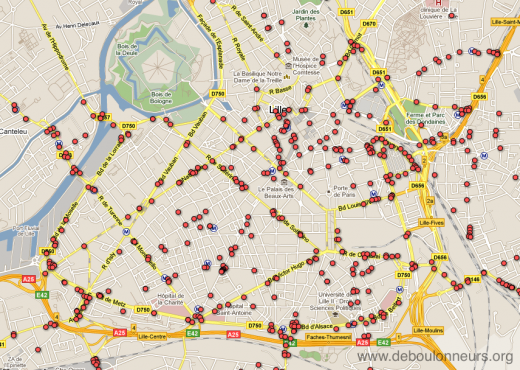
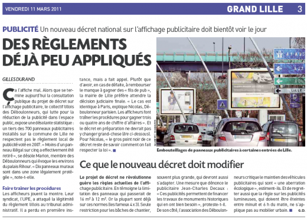

|
Accueil du site > Lille > Lille - Conférence de Presse Antipub
Lille - Conférence de Presse Antipub
Article publié le jeudi 10 mars 2011
Recensement panneaux + Consultation publique Grenelle.
- Article Nord Eclair du 10 Mars 2011.
- Article 20mn du 11 Mars 2011.
- Edition Lille Metropole du 19/20 France3 Nord-Pas de Calais du 9 Mars 2011.
|
|
Communiqué de Presse
Le Collectif des Déboulonneurs de Lille vous invite à une conférence de presse, au cours de laquelle nous aborderons l’actualité des lois et règlements sur l’affichage publicitaire à l’échelle locale et nationale.
Rappelons que le gouvernement a lancé, dans la plus grande discrétion, une consultation publique autour du décret extrêmement complexe de la loi Grenelle II sur l’affichage publicitaire (CP national déboulonneurs ici).
Par ailleurs, nous avons effectué un recensement des panneaux de publicité, suite au "nouveau" Règlement Local de Publicité de la Ville de Lille. Vous trouverez en pièce jointe une carte des panneaux existants (et non pas illégaux, dont nous parlerons lors de la conférence)
Rendez-vous ce mardi 8 mars à 18h15, dans la terrasse couverte de La Chicorée, place Rihour.

Article Nord Eclair du Jeudi 10 Mars 2011
Panneaux publicitaires : mais que fait la Ville ?
En 2007, la Ville avait adopté un nouveau règlement local de publicité. Lequel imposait d’enlever 200 panneaux publicitaires dans les deux ans. Aujourd’hui, c’est seulement moins de 20% des panneaux illégaux qui ont été retirés, ont compté les Déboulonneurs.
Article en ligne
Sur l’édition papier de l’article paru dans Nord éclair, il y avait un encart supplémentaire :
Et vous qu’en pensez-vous ?
Un projet de décret portant sur la réglementation nationale de la publicité, des enseignes et des pré-enseignes est actuellement soumis à consultation publique.
Mais il faut se dépêcher, préviennent les Déboulonnneurs : la fin de la consultation est fixée au 11 mars, soit ce vendredi. D’avis du collectif, ce projet de décret mérite pourtant qu’on s’y attarde. "il est par exemple prévu une réduction des surfaces de pub de 16 m2 à 12m2 mais dans les faits, les panneaux sont déjà à 12m2". De quoi leur faire dire que ce projet ne changera rien à l’état actuel des choses. Sans compter, estiment les Déboulonneurs, qu’il va permettre les panneaux à leds déroulants. "Il est prévu d’encadrer ces télés géantes, de les limiter à 2,5m2 mais pour nous, c’est encore trop grand". Pour s’y intéresser, voire réagir, des liens sont proposés à partir du site des Déboulonneurs : www.deboulonneurs.org
Article 20mn du Vendredi 11 Mars 2011
Publicité : Un nouveau décret national sur l’affichage publicitaire doit bientôt voir le jour
Des règlements déjà peu appliqués
Ça l’affiche mal. Alors que se termine aujourd’hui la consultation publique du projet de décret sur l’affichage publicitaire, le collectif lillois des Déboulonneurs, qui lutte pour la réduction de la publicité dans l’espace public, expose une désolante statistique : un tiers des 700 panneaux publicitaires installés sur la commune de Lille ne respectent pas le règlement local de publicité voté en 2007. « Moins d’un panneau illégal sur cinq a effectivement été retiré », se désole Marion, membre des Déboulonneurs qui évoque les environs du palais Rihour. « Dix panneaux muraux sont dans une zone légalement protégée », note-t-elle.
Faire traîner les procédures
Les afficheurs jouent la montre. Leur syndicat, l’UPE, a attaqué la légitimité du règlement lillois au tribunal administratif. Il a perdu en première instance, mais a fait appel. Plutôt que d’avoir, en cas de défaite, à rembourser le manque à gagner des « fils de pub », la mairie de Lille préfère attendre la décision judiciaire finale. « Le cas est identique à Paris, explique Nicolas, Déboulonneur parisien. Les afficheurs font traîner les procédures pour gagner trois ou quatre ans de chiffre d’affaires ». Et le décret en préparation ne devrait pas y changer grand-chose (lire ci-dessous). Pour Nicolas, « le gros point noir de ce décret reste de savoir comment on fait respecter la loi ».
Gilles Durand
Article en ligne
Ce que le nouveau décret doit modifier
Le projet de décret ne révolutionne guère les règles actuelles de l’affichage publicitaire. En témoigne la limitation des panneaux qui passerait de 16 m2 à 12 m2. Or la plupart sont déjà sur ces normes (les fameux 4 x 3). Seule restriction pour les bâches de chantier, souvent plus grande, qui devront aussi s’adapter. Une mesure que dénonce le publicitaire Jean-Charles Decaux : « Ces publicités permettent de financer les travaux de monuments historiques qui en ont bien besoin », proteste-t-il.
De son côté, l’association des Déboulonneurs critique le maintien des véhicules publicitaires qui sont « une aberration écologique », estiment-ils. Et de regretter aussi que la règle sur les publicités lumineuses, qui doivent être éteintes entre minuit et 6 h du matin, ne s’applique pas au mobilier urbain.G. D.
Article en ligne

Edition Lille Metropole du 19/20 France3 Nord-Pas de Calais du 9 Mars 2011
Reportage
JT dans son ensemble : Voir à partir de 3’36’’
|